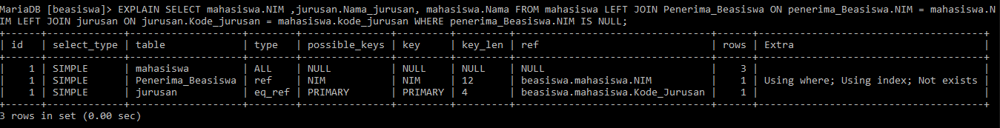

Ketika sebuah query dikirimkan ke DB, itu diurai dan diterjemahkan ke aljabar relasional. Ini diverifikasi untuk validitas dan kebenarannya. Setelah melewati tahap ini, berbagai cara untuk mengevaluasi kueri dibuat. Ini diperiksa untuk berbagai faktor dan rencana pelaksanaannya dibuat. Ini mungkin didasarkan pada biaya kueri atau berdasarkan aturan kesetaraan. Setelah eksekusi berbasis biaya dan rencana eksekusi berbasis aturan dibuat, pengoptimal harus memutuskan, rencana mana yang akan dipilih untuk evaluasi. Ini adalah langkah terpenting dalam memproses kueri.
biaya atau rencana pelaksanaan heuristik mungkin tidak selalu efektif di semua tabel dengan jenis kueri yang sama. Semuanya adalah pedoman umum untuk mengevaluasi kueri. Ada banyak faktor yang memengaruhi kinerja kueri. Rencana evaluasi secara tepat mendefinisikan sistem rencana / algoritma mana yang akan digunakan untuk mengevaluasi, indeks mana yang akan digunakan, dll.
Sebagian besar sistem database menyediakan cara untuk melihat rencana evaluasi yang dipilih untuk menjalankan kueri tertentu. Biasanya paling baik menggunakan GUI yang disediakan dengan sistem database untuk melihat rencana evaluasi. Namun, jika Anda menggunakan antarmuka baris perintah, banyak database mendukung variasi dari perintah "EXPLAIN", yang menampilkan rencana eksekusi yang dipilih untuk kueri yang ditentukan. Sintaks yang tepat bervariasi dengan database yang berbeda.
Saat Anda mengeluarkan kueri, Pengoptimal Kueri MySQL mencoba menyusun rencana yang optimal untuk eksekusi kueri. Anda dapat melihat informasi tentang rencana dengan mengawali kueri dengan EXPLAIN. EXPLAIN adalah salah satu alat paling ampuh untuk memahami dan mengoptimalkan kueri MySQL yang bermasalah. Output dari command EXPLAIN terdiri dari beberapa bagian, yaitu :
EXPLAIN SELECT mahasiswa.NIM , jurusan.Nama_jurusan, mahasiswa.Nama FROM mahasiswa LEFT JOIN Penerima_Beasiswa ON penerima_Beasiswa.NIM = mahasiswa.NIM LEFT JOIN jurusan ON jurusan.Kode_jurusan = mahasiswa.kode_jurusan WHERE penerima_Beasiswa.NIM IS NULL;
